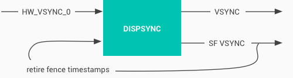

In this document
VSYNC synchronizes certain events to the refresh cycle of the display. Applications always start drawing on a VSYNC boundary, and SurfaceFlinger always composites on a VSYNC boundary. This eliminates stutters and improves visual performance of graphics.
The Hardware Composer (HWC) has a function pointer indicating the function to implement for VSYNC:
int (waitForVsync*) (int64_t *timestamp)
This function blocks until a VSYNC occurs and returns the timestamp of the actual VSYNC. A message must be sent every time VSYNC occurs. A client can receive a VSYNC timestamp once at specified intervals or continuously at intervals of 1. You must implement VSYNC with a maximum 1 ms lag (0.5 ms or less is recommended); timestamps returned must be extremely accurate.
Explicit synchronization
Explicit synchronization is required and provides a mechanism for Gralloc buffers to be acquired and released in a synchronized way. Explicit synchronization allows producers and consumers of graphics buffers to signal when they are done with a buffer. This allows Android to asynchronously queue buffers to be read or written with the certainty that another consumer or producer does not currently need them. For details, see Synchronization framework.
The benefits of explicit synchronization include less behavior variation between devices, better debugging support, and improved testing metrics. For instance, the sync framework output readily identifies problem areas and root causes, and centralized SurfaceFlinger presentation timestamps show when events occur in the normal flow of the system.
This communication is facilitated by the use of synchronization fences,
which are required when requesting a buffer for consuming or producing. The
synchronization framework consists of three main building blocks:
sync_timeline, sync_pt, and sync_fence.
sync_timeline
A sync_timeline is a monotonically increasing timeline that
should be implemented for each driver instance, such as a GL context, display
controller, or 2D blitter. This is essentially a counter of jobs submitted to
the kernel for a particular piece of hardware. It provides guarantees about the
order of operations and allows hardware-specific implementations.
The sync_timeline is offered as a CPU-only reference implementation called
sw_sync (software sync). If possible, use this instead of a
sync_timeline to save resources and avoid complexity. If you’re not
employing a hardware resource, sw_sync should be sufficient.
If you must implement a sync_timeline, use the
sw_sync driver as a starting point. Follow these guidelines:
- Provide useful names for all drivers, timelines, and fences. This simplifies debugging.
- Implement
timeline_value_strandpt_value_stroperators in your timelines to make debugging output more readable. - If you want your userspace libraries (such as the GL library) to have access
to the private data of your timelines, implement the fill driver_data operator.
This lets you get information about the immutable sync_fence and
sync_ptsso you can build command lines based upon them.
When implementing a sync_timeline, do not:
- Base it on any real view of time, such as when a wall clock or other piece of work might finish. It is better to create an abstract timeline that you can control.
- Allow userspace to explicitly create or signal a fence. This can result in one piece of the user pipeline creating a denial-of-service attack that halts all functionality. This is because the userspace cannot make promises on behalf of the kernel.
- Access
sync_timeline,sync_pt, orsync_fenceelements explicitly, as the API should provide all required functions.
sync_pt
A sync_pt is a single value or point on a sync_timeline. A point
has three states: active, signaled, and error. Points start in the active state
and transition to the signaled or error states. For instance, when a buffer is
no longer needed by an image consumer, this sync_point is signaled so image
producers know it is okay to write into the buffer again.
sync_fence
A sync_fence is a collection of sync_pts that often
have different sync_timeline parents (such as for the display
controller and GPU). These are the main primitives over which drivers and
userspace communicate their dependencies. A fence is a promise from the kernel
given upon accepting work that has been queued and assures completion in a
finite amount of time.
This allows multiple consumers or producers to signal they are using a
buffer and to allow this information to be communicated with one function
parameter. Fences are backed by a file descriptor and can be passed from
kernel-space to user-space. For instance, a fence can contain two
sync_points that signify when two separate image consumers are done
reading a buffer. When the fence is signaled, the image producers know both
consumers are done consuming.
Fences, like sync_pts, start active and then change state based
upon the state of their points. If all sync_pts become signaled,
the sync_fence becomes signaled. If one sync_pt falls
into an error state, the entire sync_fence has an error state.
Membership in the sync_fence is immutable after the fence is
created. As a sync_pt can be in only one fence, it is included as a
copy. Even if two points have the same value, there will be two copies of the
sync_pt in the fence. To get more than one point in a fence, a
merge operation is conducted where points from two distinct fences are added to
a third fence. If one of those points was signaled in the originating fence and
the other was not, the third fence will also not be in a signaled state.
To implement explicit synchronization, provide the following:
- A kernel-space driver that implements a synchronization timeline for a
particular piece of hardware. Drivers that need to be fence-aware are generally
anything that accesses or communicates with the Hardware Composer. Key files
include:
- Core implementation:
kernel/common/include/linux/sync.hkernel/common/drivers/base/sync.c
sw_sync:kernel/common/include/linux/sw_sync.hkernel/common/drivers/base/sw_sync.c
- Documentation at
kernel/common//Documentation/sync.txt. - Library to communicate with the kernel-space in
platform/system/core/libsync.
- Core implementation:
- A Hardware Composer HAL module (v1.3 or higher) that supports the new
synchronization functionality. You must provide the appropriate synchronization
fences as parameters to the
set()andprepare()functions in the HAL. - Two fence-related GL extensions (
EGL_ANDROID_native_fence_syncandEGL_ANDROID_wait_sync) and fence support in your graphics drivers.
For example, to use the API supporting the synchronization function, you might develop a display driver that has a display buffer function. Before the synchronization framework existed, this function would receive dma-bufs, put those buffers on the display, and block while the buffer is visible. For example:
/* * assumes buf is ready to be displayed. returns when buffer is no longer on * screen. */ void display_buffer(struct dma_buf *buf);
With the synchronization framework, the API call is slightly more complex. While putting a buffer on display, you associate it with a fence that says when the buffer will be ready. You can queue up the work and initiate after the fence clears.
In this manner, you are not blocking anything. You immediately return your own fence, which is a guarantee of when the buffer will be off of the display. As you queue up buffers, the kernel will list dependencies with the synchronization framework:
/* * will display buf when fence is signaled. returns immediately with a fence * that will signal when buf is no longer displayed. */ struct sync_fence* display_buffer(struct dma_buf *buf, struct sync_fence *fence);
Sync integration
This section explains how to integrate the low-level sync framework with different parts of the Android framework and the drivers that must communicate with one another.
Integration conventions
The Android HAL interfaces for graphics follow consistent conventions so when file descriptors are passed across a HAL interface, ownership of the file descriptor is always transferred. This means:
- If you receive a fence file descriptor from the sync framework, you must close it.
- If you return a fence file descriptor to the sync framework, the framework will close it.
- To continue using the fence file descriptor, you must duplicate the descriptor.
Every time a fence passes through BufferQueue (such as for a window that
passes a fence to BufferQueue saying when its new contents will be ready) the
fence object is renamed. Since kernel fence support allows fences to have
strings for names, the sync framework uses the window name and buffer index
that is being queued to name the fence (i.e., SurfaceView:0). This
is helpful in debugging to identify the source of a deadlock as the names appear
in the output of /d/sync and bug reports.
ANativeWindow integration
ANativeWindow is fence aware and dequeueBuffer,
queueBuffer, and cancelBuffer have fence parameters.
OpenGL ES integration
OpenGL ES sync integration relies upon two EGL extensions:
EGL_ANDROID_native_fence_sync. Provides a way to either wrap or create native Android fence file descriptors in EGLSyncKHR objects.EGL_ANDROID_wait_sync. Allows GPU-side stalls rather than in CPU, making the GPU wait for an EGLSyncKHR. This is essentially the same as theEGL_KHR_wait_syncextension (refer to that specification for details).
These extensions can be used independently and are controlled by a compile
flag in libgui. To use them, first implement the
EGL_ANDROID_native_fence_sync extension along with the associated
kernel support. Next, add a ANativeWindow support for fences to your driver then
turn on support in libgui to make use of the
EGL_ANDROID_native_fence_sync extension.
In a second pass, enable the EGL_ANDROID_wait_sync
extension in your driver and turn it on separately. The
EGL_ANDROID_native_fence_sync extension consists of a distinct
native fence EGLSync object type so extensions that apply to existing EGLSync
object types don’t necessarily apply to EGL_ANDROID_native_fence
objects to avoid unwanted interactions.
The EGL_ANDROID_native_fence_sync extension employs a corresponding native fence file descriptor attribute that can be set only at creation time and cannot be directly queried onward from an existing sync object. This attribute can be set to one of two modes:
- A valid fence file descriptor. Wraps an existing native Android fence file descriptor in an EGLSyncKHR object.
- -1. Creates a native Android fence file descriptor from an EGLSyncKHR object.
The DupNativeFenceFD function call is used to extract the EGLSyncKHR object from the native Android fence file descriptor. This has the same result as querying the attribute that was set but adheres to the convention that the recipient closes the fence (hence the duplicate operation). Finally, destroying the EGLSync object should close the internal fence attribute.
Hardware Composer integration
The Hardware Composer handles three types of sync fences:
- Acquire fence. One per layer, set before calling
HWC::set. It signals when Hardware Composer may read the buffer. - Release fence. One per layer, filled in by the driver in
HWC::set. It signals when Hardware Composer is done reading the buffer so the framework can start using that buffer again for that particular layer. - Retire fence. One per the entire frame, filled in by the driver
each time
HWC::setis called. This covers all layers for the set operation and signals to the framework when all effects of this set operation have completed. The retire fence signals when the next set operation takes place on the screen.
The retire fence can be used to determine how long each frame appears on the screen. This is useful in identifying the location and source of delays, such as a stuttering animation.
VSYNC offset
Application and SurfaceFlinger render loops should be synchronized to the hardware VSYNC. On a VSYNC event, the display begins showing frame N while SurfaceFlinger begins compositing windows for frame N+1. The app handles pending input and generates frame N+2.
Synchronizing with VSYNC delivers consistent latency. It reduces errors in apps and SurfaceFlinger and the drifting of displays in and out of phase with each other. This, however, does assume application and SurfaceFlinger per-frame times don’t vary widely. Nevertheless, the latency is at least two frames.
To remedy this, you can employ VSYNC offsets to reduce the input-to-display latency by making application and composition signal relative to hardware VSYNC. This is possible because application plus composition usually takes less than 33 ms.
The result of VSYNC offset is three signals with same period, offset phase:
HW_VSYNC_0. Display begins showing next frame.VSYNC. App reads input and generates next frame.SF VSYNC. SurfaceFlinger begins compositing for next frame.
With VSYNC offset, SurfaceFlinger receives the buffer and composites the frame, while the application processes the input and renders the frame, all within a single frame of time.
Note: VSYNC offsets reduce the time available for app and composition and therefore provide a greater chance for error.
DispSync
DispSync maintains a model of the periodic hardware-based VSYNC events of a display and uses that model to execute periodic callbacks at specific phase offsets from the hardware VSYNC events.
DispSync is essentially a software phase lock loop (PLL) that generates the VSYNC and SF VSYNC signals used by Choreographer and SurfaceFlinger, even if not offset from hardware VSYNC.
Figure 1. DispSync flow
DispSync has the following qualities:
- Reference. HW_VSYNC_0.
- Output. VSYNC and SF VSYNC.
- Feedback. Retire fence signal timestamps from Hardware Composer.
VSYNC/Retire offset
The signal timestamp of retire fences must match HW VSYNC even on devices that don’t use the offset phase. Otherwise, errors appear to have greater severity than reality. Smart panels often have a delta: Retire fence is the end of direct memory access (DMA) to display memory, but the actual display switch and HW VSYNC is some time later.
PRESENT_TIME_OFFSET_FROM_VSYNC_NS is set in the device’s
BoardConfig.mk make file. It is based upon the display controller and panel
characteristics. Time from retire fence timestamp to HW VSYNC signal is
measured in nanoseconds.
VSYNC and SF_VSYNC offsets
The VSYNC_EVENT_PHASE_OFFSET_NS and
SF_VSYNC_EVENT_PHASE_OFFSET_NS are set conservatively based on
high-load use cases, such as partial GPU composition during window transition
or Chrome scrolling through a webpage containing animations. These offsets
allow for long application render time and long GPU composition time.
More than a millisecond or two of latency is noticeable. We recommend integrating thorough automated error testing to minimize latency without significantly increasing error counts.
Note: Theses offsets are also configured in the device’s BoardConfig.mk file. Both settings are offset in nanoseconds after HW_VSYNC_0, default to zero (if not set), and can be negative.